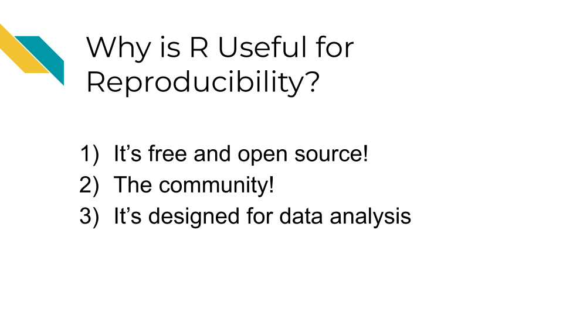

Chapter 2 R for Reproducibility
2.1 Learning Objectives
Before we begin to jump into additional tools that R can help us with to be work more efficiently and in a more reproducible manner, it is helpful to first discuss why we should consider R in the first place. After completing this section you will be able to:

2.2 Why R
R is a programming language for working with data, performing statistical analyses, and for creating plots and graphics that was developed in 1991 by Ross Ihaka and Robert Gentleman at the University of Auckland, New Zealand (“R (Programming Language)” 2023; “R: The R Project for Statistical Computing”). Countless contributors have made R what it is today.
There are some especially useful aspects about R that make it a great option for creating reproducible data analyses.

2.3 It is free and open source
The first is that R is free and open source.
The term open source means that the code is publicly available. Thus all of the code involved in creating R is actually publicly available! This enables users to check what code is used in a particular package (a set of code that allows you to do various things) so that they can modify or build upon the code if they would like to.
In fact, many users create their own R packages to share their code with others. There are places such as the Comprehensive R Archive Network (CRAN) and elsewhere that allow users to publish their own packages for others to use.
- programming language - A specified set of notations to tell a computer what to do
- R - Programming language for working with data to perform statistical analyses and for creating plots and other graphics
- open source - Code is publicly available
- R package - A set of code that can be shared between users
Why are these aspects good for reproducibility?
- Since R is free, it is accessible to anyone. Therefore, anyone could run your code if you shared it with them, without them needing to buy software.
- Since R is open source, if you use packages from others, people can determine what underlying code your code used (if you tell them what version you used - more on that later!)
2.4 The community
R has a very rich and active community!
This makes it easier to reach out to others for help, find support, find tutorials, and more.
There are several R community groups that are especially helpful:
- R Ladies - a support group that is not just for ladies, but is open to anyone who wants to improve their R skills! There are local chapters in many large cities that often have in-person meetings.
- There are lots of useful resources, such as the R for Data Science book (written by two developers at Posit (formally called RStudio) which develops lots of core R packages), resources and online courses from the Johns Hopkins Data Science Lab including Open Case Studies, resources and workshops from Data Carpentry, Dataquest, DataTrail and more!
See this link for more R resources.
Why is this rich community good for reproducibility?
- Overall your code has a better chance of being more accessible than if it were written in a language that is not open source or that has limited support.
- You can also find support to make sure your code does what you want it to, as well as support to make your code as reproducible as possible.
2.5 Designed for data
R is a statistical programming language, meaning it was designed to help you analyze data. It is the main focus of the language. This is one of the major advantages of using R over other programming languages that have more general purposes.
Because of this many people have designed useful packages that are especially relevant to:
- Dealing with messy data in a systematic and reproducible way to get it into a state that is useful for data analysis
- Producing statistical analysis of data
- Creating effective plots of data
Although other options like SPSS and SAS (which are not free!) can also be helpful for statistical analysis, R is especially powerful at getting messy data ready to analyze and for creating useful plots to represent patterns in data. Conveniently, R can do all of these steps in a data project and does not require users to switch between different programs to perform these tasks. R also helps create reports that can demonstrate to collaborators and others exactly how analysis was performed, aiding in the transparency of how the data was used from start to finish.
R can also import data from many different sources that other statistical software can’t handle (including scraping data from websites or PDFs). This allows users much more flexibility to use data as close to the source as possible. This can enable users to stop copy and pasting data and reduce the risk of human error. If you are interested, see Open Case Studies for more guidance on importing many different kinds of data.
Why are these design features especially helpful for creating reproducible analyses?
- It enables users to work with messy data and get it ready for analysis, as opposed to requiring users to use other programs. The
tidyversea suite of very helpful packages has many data wrangling packages that are especially intuitive for others to read and understand your code. - Users can create effective plots using the same program as for data prep and analysis. The
ggplot2package is famous for making really effective and customizable plots. - It helps create reports that can show the entire data analysis process from importing the data to making plots.
R Markdownreports are very helpful for this. - It is easier to import data closer to the original source, rather than converting files or copy and pasting data, which can result in accidental modifications of the data.
2.6 Conclusion
In summary, R can be especially useful if you want to make your data analyses more transparent and reproducible for the following reasons:
- It is free and open source, meaning that code that you might incorporate in your analyses is accessible to anyone. Secondly, others can use your code without needing to buy software.
- There is a rich R community that can help you make the most out of your code and learn how to write your code in a more reproducible manner.
- R is particularly powerful for preparing data for analysis and for creating visual representations of data. Beyond being free, these unique benefits make R a particularly good statistical tool.
- R is especially designed to analyze data and for the entirety of the process, which makes it great for creating transparent information about how you actually worked with data from start to finish.